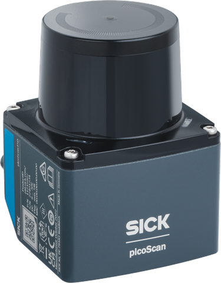

Level 2: picoScan150 Jump & Run¶
Build picoScan150 Jump & Run and use the built-in IMU of a picoScan as a game controller. Move the sensor left or right and the player runs with it; a quick upward hop makes it jump. Points grow with time, and the game gets faster every 15 seconds. No scan data is used.
picoScan150 Jump & Run: moving the sensor steers the player.
Before You Start¶
- A picoScan with IMU streaming, for example picoScan150, on the same network as your computer (Getting Started).
- Python, a browser, the Kaitai Struct compiler and runtime, and sick_scan_rest_client.
- Hold the sensor firmly with slack in the cables. Short moves of 10 to 20 cm are enough.
Data Path¶
picoScan IMU → UDP → CRC32 check → Kaitai Python parser → motion controller → local web server → browser game
Python receives the UDP datagrams and serves the Canvas game on 127.0.0.1.
Generate the parser from the official
Compact frame
and type-2 IMU
definitions. The parser does not verify the checksum; check the CRC32 first
(Reception and Validation).
Configure IMU Output¶
The game sets up the stream through the REST interface at start and disables it on exit:
from sick_scan_rest_client.client import RESTClient
client = RESTClient("192.168.0.1") # sensor IP address
client.setUserLevel("Service", "servicelevel")
client.writeVariable("ImuDataEthSettings",
{"Protocol": 1, "IPAddress": [192, 168, 0, 100], "Port": 7503})
client.writeVariable("ImuDataEnable", True)
Send the IMU stream by UDP (Protocol 1) to the computer at 192.168.0.100, port 7503. The change is RAM-only.
Keep both IP addresses and the port configurable. If the sensor streams but nothing arrives, the computer's firewall is the usual cause; allow the port or pick one that is permitted.
How Movement Works¶
Sideways movement steers the player; a quick upward hop makes it jump. The game uses gravity-corrected acceleration, not tilt. To calibrate, hold the sensor still, then push it right once.

Move the sensor sideways to steer; lift it for a quick hop to jump.
Move right →Game controls.
| Control | Response |
|---|---|
| Move sensor left or right | Player runs left or right. |
| Quick upward hop | One jump. |
| Start, Pause, Stop | Run, freeze, or end the game. |
| Calibrate | Hold still, then push right once. |
| Settings | Sensor IP, computer IP, port, sensitivity. |
| Arrow keys and Space | Play without a sensor. |
Jump over blocks, dodge falling rocks from level 2, and collect coins. You score 10 points per second and 50 per coin. The game pauses if IMU data stops for 500 ms.
Project Prompt¶
Paste this prompt into your coding assistant in a new workspace. It asks for the receiver, the game, tests, and a Windows executable.
Expand to view the complete project prompt
Build a beginner-friendly level-two project called "picoScan150 Jump & Run":
a SICK picoScan150 IMU is the game controller for a basic browser
jump-and-run game. The player moves left and
right when I move the sensor left and right (use the measured acceleration,
not tilt), and jumps when I lift the sensor with a quick upward hop.
Deliver working files, not a plan. Work in a new folder outside the
developer guide. Use Python 3.12, the Kaitai Struct Python runtime, requests,
sick_scan_rest_client (https://github.com/SICKAG/sick_scan_rest_client) and
plain HTML, CSS and JavaScript with Canvas. Use only the Python standard
library for the web server. No ROS, SICK SDK, scan data, point clouds,
frontend framework or external game assets. Keep the code easy to follow.
Draw the player as a small picoScan: grey housing with a blue SICK badge,
black optics dome with a moving red scan point, short legs, and a faint scan
fan in the running direction.
1. Configuration
Read config.json next to the program (create it with defaults on first start)
and allow command-line overrides: sensor IP (default 192.168.0.1), PC IP on
the sensor network (default 192.168.0.100), UDP port (default 7503), local
HTTP port (default 8765), --no-configure and --no-browser. Validate IPv4
addresses and ports. Offer the same settings in a Settings dialog in the game,
list the PC's local IPv4 addresses as suggestions, save changes back to
config.json and reconnect without restarting the program.
2. Sensor setup with REST
At start, in a background thread, use sick_scan_rest_client: RESTClient(ip),
setUserLevel("Service", password from config), then writeVariable
"ImuDataEthSettings" = {"Protocol": 1, "IPAddress": [PC IP octets],
"Port": udp port} and "ImuDataEnable" = true. Check reachability with a short
TCP connect to port 80 first, because the client sets no timeouts. Bypass any
system HTTP proxy for the sensor IP. writeVariable returns (ok, data);
check ok. Both variables need the Service level. Use UDP: TCP output
(Protocol 2) was refused in tests, and polling the IMU over REST only
updates at about 4 Hz, which is too slow for a game. These are RAM-only
changes; do not call WriteEeprom. Show the result in the UI. On exit set
ImuDataEnable = false. On Windows, atexit does not run when the console
window is closed, so also register a console control handler
(SetConsoleCtrlHandler) for close and Ctrl+Break. Keep scan settings
untouched.
3. Receive and decode with the real Kaitai parser
Generate Python from SICKAG/KaitaiStructDescriptions (public branch),
formats/compact_frame.ksy with all imported formats, using
kaitai-struct-compiler -t python --outdir <dir> formats/*.ksy. Keep the
generated modules unmodified and record the command. They import each other
as top-level modules, so add their folder to sys.path, and use the
kaitaistruct runtime 0.11 or newer. Do not replace Kaitai
with a hand-written struct parser. Bind a UDP socket to the PC IP and port,
accept datagrams only from the sensor IP, check the start bytes 02 02 02 02,
verify CRC32 (zlib.crc32 over all bytes except the trailing 4-byte
little-endian checksum), then parse with CompactFrame and accept only
telegram_type == 2. Count good and rejected frames, compute the packet rate
(about 100 Hz on picoScan150) and keep the receiver alive on bad packets.
Report bind errors clearly (for example, the PC IP is not on this computer).
Record a few hundred real frames to a file for the tests.
4. Turn acceleration into controls
Rotate the acceleration into the world frame with the orientation quaternion
(w, x, y, z) and subtract a gravity/bias vector, so tilting the sensor does
not look like sideways motion. On picoScan150 the quaternion is
gravity-referenced: R(q) * acc is about (0, 0, 9.8) at rest. Without the
rotation, a 20 degree tilt leaks about 3.4 m/s^2 into the sideways axis and
the velocity drifts. Yaw has no magnetometer reference and can drift slowly,
so offer recalibration. Estimate that vector automatically from the
first 1.5 s, and track it slowly while the sensor is quiet.
Calibrate button: 1.5 s still (reject if the per-axis standard deviation is
above 0.35 m/s^2), then "move the sensor quickly to the RIGHT once": the
horizontal direction of the strongest push sample (above 2 m/s^2) becomes
the right axis. Without calibration, use the sensor y axis projected into
the horizontal plane. Add an invert option.
Sideways input: dead zone 0.35 m/s^2, then integrate into a velocity with a
leak (time constant 0.8 s while moving, 0.12 s after 0.15 s of quiet), so it
returns to zero when the sensor stops. The leak recovers only about half
of the real movement, so scale the velocity in the game (about 2600 px per
m/s at sensitivity 1). Do not double-integrate to an absolute position; it
drifts within seconds. Jump: vertical linear acceleration
above 3.5 m/s^2, re-arm below 1.0 m/s^2, cooldown 0.6 s; count jumps with a
sequence number so the browser consumes each jump once. Use sensor
timestamps for dt.
5. Game
Serve the game on 127.0.0.1 only. Push velocity, accelerations, jump
counter, calibration state, packet statistics and sensor status to the
browser with Server-Sent Events at about 50 Hz. Accept POST requests only
with Content-Type application/json. Give each calibration request an id and
let the dialog react only to status messages with that id, so a stale
"ready" message does not close it early. If the HTTP port is busy, try the
next ones and open the browser on the port actually used.
Canvas 960x540, scaled to the window without horizontal scrolling. The world
scrolls left; the player moves with sensor velocity times a sensitivity
setting, clamped to the screen; arrow keys and Space also work. Ground blocks
to jump over, from level 2 falling rocks with a shadow warning to dodge
sideways, coins for +50. Score 10 points per second of active play, level up
every 15 s with faster scrolling and more obstacles, capped so jumps stay
possible. Collision ends the run.
Buttons: Start, Pause/Resume, Stop, Calibrate, Settings. Show score, level,
high score (saved in highscore.json next to the program), sensor status with
packet rate, a sideways acceleration and velocity meter, and a jump light.
If data is older than 500 ms while playing in sensor mode, pause and require
Resume. If no packets arrive 3 s after a successful configuration, show a
hint to check the PC IP and the firewall, or choose another UDP port.
Corporate Windows firewalls often block inbound UDP and ignore local rules,
or allow it only while the Ethernet network is classified as Private; then
use a port the policy allows (for example 30719 in our tests).
6. Tests and delivery
Unit-test the receiver with recorded real frames (good CRC, corrupted byte,
wrong start bytes) and the controller with synthetic samples: still sensor,
noise below the dead zone, push right/left, calibration learning a different
axis, invert, a tilted sensor that must not drift, a push while tilted,
an upward hop giving one jump, a sideways push giving no jump, and a shaky
calibration being rejected. Provide a PowerShell build script that runs the
tests and builds one console .exe with PyInstaller (--onefile, add the static
folder as data, pass the Kaitai folder with --paths and the generated modules
as hidden imports, name it picoScan150JumpAndRun). Include a README
with run, settings, calibration and firewall notes. Test with the real sensor
and state clearly what was verified with hardware.
Check the Result¶
- Without a sensor, play with the keyboard; the high score survives a restart.
- With the sensor, the status shows about 100 valid packets per second.
- Holding still or tilting slowly does not move the player; a short move right does, then stops.
- A quick hop gives exactly one jump; a sideways push gives none.
- Quitting the program switches the IMU stream off.
Was this page helpful?